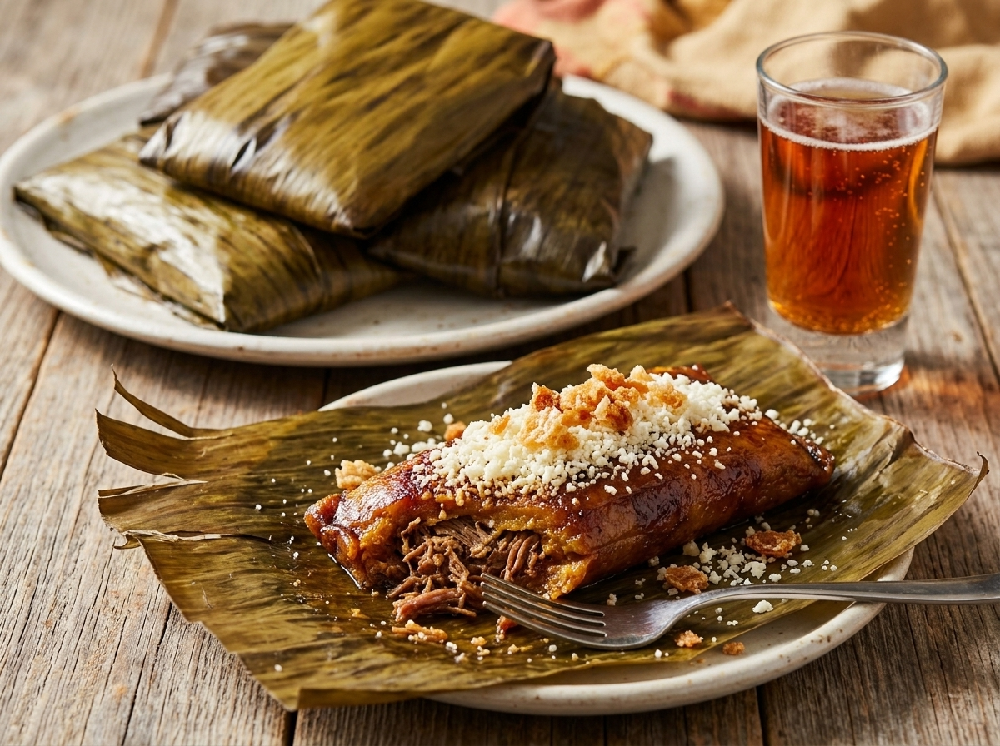

¿Cual es el origen de los envueltos de plátano?
Estos Envueltos de Plátano Maduro son un plato tradicional del departamento del Tolima y que se comen típicamente como un plato de acompañamiento con la popular lechona Tolimense, un delicioso plato de carne de cerdo; también los hacen mucho en la region caribeña.
Si eres fan de los plátanos maduros, entonces la receta de Envueltos de Plátano Maduro te va a encantar. Y si todavía no eres un fan, apuesto que lo serás pronto!
Los Envueltos de Plátano Maduro son hechos de una mezcla de puré de plátano maduro, panela y mantequilla, mientras que algunas personas también le añaden tocino cortado en dados (chicharrón) o rallado a sus envueltos. Los ingredientes se envuelven con hojas de plátano y cocidos en el horno. Estos envueltos son dulces, deliciosos y van perfecto con carnes asadas, especialmente de cerdo.
Ingredientes
- 4 plátanos muy maduros pelados
- 1/2 taza de harina para arepas
- 6 cucharadas de agua tibia
- 1/3 taza de panela rallada o azúcar morena
- 1/2 taza de mantequilla derretida
- 1/2 taza de queso mozzarella rallado opcional
- Hojas de plátano cortadas en trozos de aproximadamente de 12 pulgadas de largo o papel de aluminio
Instrucciones
- Precalentar el horno a 350 F. Lavar las hojas bien con agua caliente y dejar de lado.
- Coloque todos los ingredientes, excepto las hojas de plátano en el procesador de alimentos y procese hasta que los plátanos queden en puré. Colocar en un tazón, tapar y deje reposar por unos 40 minutos.
- Para el montaje: colocar 1 trozo de la hoja en una superficie de trabajo y poner aproximadamente ¼ de taza de la mezcla de plátano en el centro de la hoja de plátano.
- Doble la hoja del plátano para cubrir todo el relleno, como si estuvieras haciendo un paquete. Continuar el proceso hasta terminar con todos los envueltos.
- Colocarlos en una bandeja de hornear durante aproximadamente 1 hora y 30 minutos. Servir calientes.